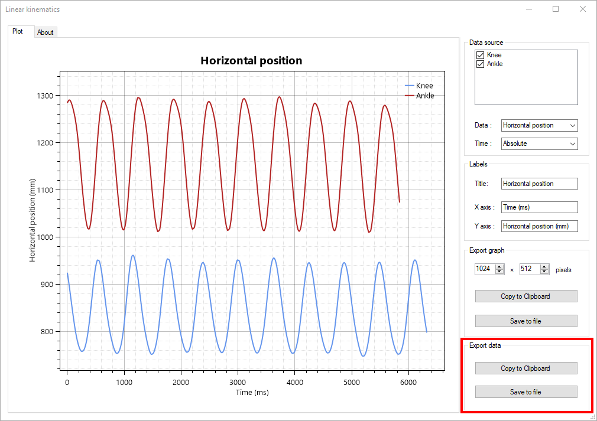

Exporting data and measurements¶
Save annotations¶
To save annotations use CTRL + S or the menus or . This saves annotations to a KVA file, the native annotation format of MotionON.
Export measurements from kinematics dialogs¶
To export measurements such as point positions, linear velocities, or angular accelerations, use the kinematics dialogs. The kinematics dialogs are found under the menu: , , , .
To export data use the export options at the bottom right of the dialogs.
This will export the data in CSV format, either to the clipboard or to a file. The first column is the time, either in milliseconds or normalized, and the other columns are the data sources.
The measurements displayed and exported from the kinematics dialog use the filtered coordinates. The filtering process is described in the About box of the Linear kinematics dialog. You can control filtering from the preferences at .
Export data to spreadsheet¶
Another option to export data is to use the converters menus under .
The following options are available:
LibreOffice (.odf)
Microsoft Excel (.xml)
Web (.html)
Gnuplot (.txt)
The underlying mechanism for these menus is to convert the annotation data into the output format: it does not perform any higher level computations. This approach has the following differences with the export from the kinematics dialogs:
The coordinates do not use filtering.
Only the coordinates are exported, not any higher level measurements like speed or acceleration.
Each object is exported independently in its own table.
Key images times are exported.
Stopwatches are exported.
The time column uses the configured timecode format and may not be numerical in nature.
To use Gnuplot to plot the trajectory data on a 3D graph with time as the third dimensions, you can use the following commands:
gnuplot> set xlabel "Time"
gnuplot> set ylabel "X-AXIS"
gnuplot> set zlabel "Y-AXIS"
gnuplot> set ticslevel 0
gnuplot> splot "weightlift.txt" using 1:2:3 with lines
Citation examples¶
If you used MotionON in your research we would very much appreciate it if you included it in your bibliography.
You can find examples of formatted citations in the About dialog under the Citation tab.
Note
MotionON is an open source project and is not published by a company, thus there is no meaningful “city” or “country” of origin as is sometimes requested by journals for software references.